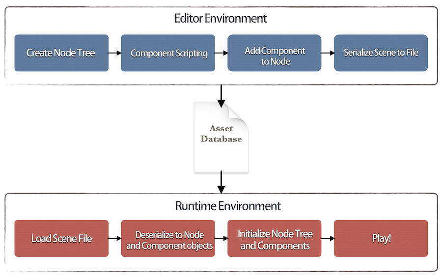
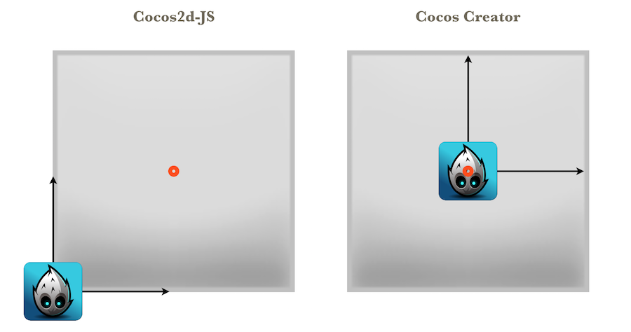

Cocos2d-x User Guide
Cocos Creator is a new type of game development tool oriented towards content creation that has completely integrated the componentized edition Cocos2d-x WEB, by which you can launch games on platforms like Web, iOS, Android, Mac, Windows, etc.. Moreover, you can use it to directly launch games on Cocos Play platform, grasping the new opportunity brought by the rapid development of the channel for mobile web games. For more introductions to Cocos Creator, please refer to Introduction.
The aim of this document is to introduce the users of Cocos2d-x to Cocos Creator and help them learn how to use the new editor as soon as possible. This document will discuss possible problems that may occur in the transition from Cocos2d-x to Cocos Creator development and offer relative solutions, which will not go deep into framework details but provide links to detailed reference documents of different parts.
1. Typical Misconceptions
For new Cocos Creator users, some of the following typical misconceptions may occur：
- Hoping to use Cocos Creator by coordinating it with Cocos2d-x：Cocos Creator, having had a complete JavaScript WEB engine internally, can work without relying on Cocos2d-x. However, if you want to launch the original edition, you still need to set up a Cocos2d-x in your computer.
- Building an entire code framework at first and then add in game contents：Cocos Creator's workflows are content creation oriented, which is very convenient for prototype creation. You can create scenes and write logic code directly into the editor, then you can drive the game scene and run it. The following data driven chapters will introduce changes of workflows in detail
- Directly check the API of Cocos2d-JS when coding：Cocos Creator has said to be originated from Cocos2d-JS. Their APIs have the same origin and have lots of identical parts. But with entirely new componentized frameworks, their APIs are different and not compatible with each other
- Hoping to directly run the old Cocos2d-JS games on Cocos Creator：Their APIs are not 100% compatible; therefore, such operation is unavailable.
- Extend functions by way of inheritance：In Cocos2d-JS, inheritance is a basic method for extending node functions. But in Cocos Creator, inheriting and extending nodes is not recommended. The node is only an entity. The logic of the game should be realized by different components and then be assembled in the node.
The reason for mentioning these misconceptions at the beginning of this document is that we hope developers can realize that the workflows and development ideas provided by Cocos Creator are tremendously different from those of Cocos2d-x. For a better understanding of how to code correctly in Cocos Creator, the following two chapters will introduce the changes in workflows and API level brought by data driven in more detail.
2. Data Driven
In Cocos2d-x, the development method is driven by code and most of the game's data is stored in the code, unless the developer has built his/her own data driven framwork. In the framework of Cocos Creator, all the scenes will be serialized as pure data. When running, these pure data will be used to rebuild factors like scenes, interfaces, animations and even components, etc..
What is code driven and what is data driven?
Why do we call Cocos2d-x a code driven development method? For instance, suppose that there is a character in the scene, who will walk around continuously in one area, then we will code as follows:
var role = new cc.Sprite('role.png');
scene.addChild(role);
role.setPosition(100, 100);
var walk = cc.sequence(cc.moveBy(5, 100, 0), cc.moveBy(5, -100, 0)).repeatForever();
role.runAction(walk);
In this code, scene relationship, position information, action section and animation information of role are all realized by code; therefore it's called code driven. There also are some developers who store data information in other documents, but they still have to realize the parser of data themselves. Even when using some traditional editors, parsers are also needed to parse the data exported from editors into scenes.
But what Cocos Creator provides is a more thorough data driven method. All the information edited in the editor will be serialized into data documents. When running, the engine will directly transform the data into object by deserialization. This procedure is fundamentally different from the procedure described above: the category property in the engines can be directly serialized or deserialized. You don't need to transform it by any mapping relation. Scene graph, position property and animation, etc. in the above example can all be serialized by the editor into data. When loading scenes, no data is needed, developers only need to deserialize the whole scene from scene data:
cc.director.loadScene('SampleScene');
Serialization
Serialization and deserialization supports most public properties in Cocos Creator. These properties are exposed to developers through the properties panel. Developers can arbitrarily modify and save properties in editor. The procedure of saving is to serialize resources and scene data into Asset Database. In contrast, in the procedure of loading scenes, the deserialization mechanism can instantiate corresponding objects according to scene data, and restore all properties set up in the editor.
What's more, the power of data driven lies in the fact that components edited by users themselves can also make property declarations. These properties can be edited in editor, saved in scene data, and finally deserialized into game scenes when running.
The source database is presented as Assets in the editor.
Understanding workflows of Cocos Creator from the angle of data driven
Being different from Cocos2d-x, workflows of Cocos Creator are content creation oriented. Developers might encounter various kinds of confusion in the process of transition. However, when viewing from the angle of data driven, such changes of workflows will be a matter of course. Data driven makes it possible to freely edit scenes. Developers can not only build the whole scene visually, but also edit the logic of the game (edit properties exposed by components), which makes the editor the access for all, but not code. Just like the example before, in Cocos Creator, developers build a parent-child relationship, set position, and design animation with editor at first, then design the logic of the nodes in the scene using the component code; and assemble components into different nodes in the end.

3. Changes at Framework Level
As is mentioned at the beginning, Cocos Creator has been completely integrated with componentized Cocos2d-JS. This is a highly customized edition. Due to componentization and the needs of data driven, API sets and the standard edition of Cocos2d-JS have the same origin, but the two of which are uncompatible with each other. The following are detailed introductions of some important API differences:
Logic Tree and Render Tree
In Cocos2d-JS, the Render device will traverse the scene's node tree to generate a render queue; therefore, the node tree built by developers is in fact a render tree. However, in Cocos Creator, we introduce a new concept: logic tree. The node tree built by developers and mounting components constitutes a logic tree, within which nodes constitute entity units and components are in charge of logic.
The most essential difference is: What the logic tree concerns is game logic but not render relation.
Th logic tree will generate the scene's render tree and decide rendering order. But developers don't need to worry about these, they only need to make sure the correctness of the displaying effect in editor. In Hierarchy of editor, developers can adjust the order and parent-child relationship of the logic tree.
Scene Management
In Cocos2d-JS, after building scenes with code, developers can switch scenes by 'cc.director.runScene'. In Cocos Creator, when developers have finished building scenes in editor, all the data will be saved as a 'scene-name.fire' document and then be stored in Asset Database. Developers can load a scene resource by using cc.director.loadScene. Please refer to the following concrete example:
var sceneName = 'scene-name';
var onLaunched = function () {
console.log('Scene ' + sceneName + ' launched');
};
// The first parameter is the name of the scene. The second optional parameter is the callback function after the loading scene.
cc.director.loadScene(sceneName, onLaunched);
Besides, interface for visiting scene nodes is provided:
// To obtain scene nodes of logic tree
var logicScene = cc.director.getScene();
Node and Component
In Cocos Creator, 'cc.Node'is replaced by the logic node, and the old node is renamed as _ccsg.Node and becomes a private category that is not recommended to be used anymore. The reason for this is that developers only need to focus on logic nodes and they no longer need to care about render nodes at the bottom. Of course, we have preserved its API sets as much as possible. APIs like information concerning Transform, node tree, Action and properties remain unchanged.
There used to be a crude mechanism of components. Developers could receive callbacks like onEnter, onExit, update, etc. by adding components to Node. In Cocos Creator, the same interface addComponent is used, but the component system becomes the core of the whole engine. Components can extend the function of the logic node in various ways. It could even be said that the logic node shouldn't include any actual game logic and it's logic should be completely assembled by various kinds of logic components.
And this leads to the biggst difference between Cocos2d-JS and Cocos Creator: How to extend node behavior?
In Cocos2d-JS, developers can extend Nodes. Cocos Creator does not allow this. All the extensions should be done by adding components. In a componentized framework like Cocos Creator, composition is the preferred extension method.
For more information on the component system, please refer to chapters like Node Component and Components, etc..
Coordinate System and Anchor Point
The coordinate system of Cocos Creator is still a cartesian coordinate system, but there are some changes in anchor points. Please look at the diagram before reading the explanations:

Supposing the anchor point of a context node is (0.5, 0.5). This node has a subnode, the anchor point of which is (0, 0). In Cocos2d-JS, its illustration will be like that in the left diagram. But in Cocos Creator, its illustration will be like that of the right diagram. The reason is that the local coordinate systems of the subnodes are different. In Cocos2d-JS, wherever the anchor point of the parent node is located, the origin of the subnode's coordinate system is at the lower left corner of the parent node. But in Cocos Creator, the origin of the subnode's coordinate system is in the position of the parent node's coordinate position(i.e., its anchor point). Such modification is more compatiable with the editor, which is, in general, very natural for scenes built by the editior. But when developers use code to build nodes, they should pay special attention.
Categories and objects that remain unchanged
In Cocos Creator, we preserved the behaviors of lots of important categories and objects, which include:
cc.gamecc.viewcc.directorcc.audioEnginecc.eventManagercc.schedulercc.textureCachecc.syscc.visibleRect- scripting actions
- Some types of render nodes: Menu and MenuItem,ClippingNode,ProgressTimer,MotionStreak,ParallaxNode,RenderTexture,DrawNode,relative categories of Tile map, etc.
- Chipmunk physics engine and PhysicsDebugNode
- Types of basic data
Points to be noted:
- Those types of preserved render nodes listed above can only interact with the render tree and can't be used together with logic nodes and components.
- Action system supports not just render nodes, but all the actions operated on Transform support logic nodes too.
cc.schedulersupports components, which contain interfaces likeschedule,scheduleOnce,unschedule,unscheduleAllCallbacks- Though event manager is preserved, logic nodes have a set of new event API. Direct use of event manager is not recommended. For detailed information, please refer to the introduction of the event system that follows
Event System
In cc.Node, a series of wholly new event APIs are added. From logic nodes, various events can be distributed. The monitor's register of some kind of event is also allowed. The monitor could be a simple callback function, or an assembly of callback functions and its caller. List of important APIs:
node.emit(type, detail): Inform all the monitors to monitortypeevent. Capable of sending an additional parameter.node.dispatchEvent(event): Send an event to its monitor. Support bubbling.node.on(type, callback, target): Continuously monitortypeevent ofnode.node.once(type, callback, target): Monitortypeevent ofnodeonce.node.off(type, callback, target): Cancel the monitoring of alltypeevents or cancel a certain monitor oftypeevent (appointed by callback and target).
Such an event distribution method has changed from centralized distribution by cc.eventManager to distribution by the node which has the event itself. It can be called a transformation from a centralized event system to a discrete event system. In the meantime, Cocos Creator has built in two kinds of system events(i.e., MOUSE and TOUCH) in nodes:
| Definition of enumeration object | Corresponding event name |
|---|---|
cc.Node.EventType.TOUCH_START |
'touchstart' |
cc.Node.EventType.TOUCH_MOVE |
'touchmove' |
cc.Node.EventType.TOUCH_END |
'touchend' |
cc.Node.EventType.TOUCH_CANCEL |
'touchcancel' |
cc.Node.EventType.MOUSE_DOWN |
'mousedown' |
cc.Node.EventType.MOUSE_ENTER |
'mouseenter' |
cc.Node.EventType.MOUSE_MOVE |
'mousemove' |
cc.Node.EventType.MOUSE_LEAVE |
'mouseleave' |
cc.Node.EventType.MOUSE_UP |
'mouseup' |
cc.Node.EventType.MOUSE_WHEEL |
'mousewheel' |
Henceforth, developers can directly respond to various MOUSE and TOUCH events of nodes. They no longer need to judge whether contact points are included in nodes. Moreover, the new event system supports event bubbling. Suppose the TOUCH event is triggered on a node, if the event monitor didn't stop bubbling, its parent node would trigger the same TOUCH event as well. For a concrete method of use for the event system, please refer to Scripting Events
4. Next step
In a highly generalized way, the text above introduced some of the design ideas behind Cocos Creator and obstructions that may occur when transitioning from Cocos2d-JS. Not all the knowledge points are covered here. That's not the purpose of this document either. The purpose of this document is to help Cocos2d-x users learn how to use Cocos Creator more easily. Please continue reading the Cocos Creator User Guide, getting to learn all of the workflows and coding techniques.
Continue on to read about Project Structure.